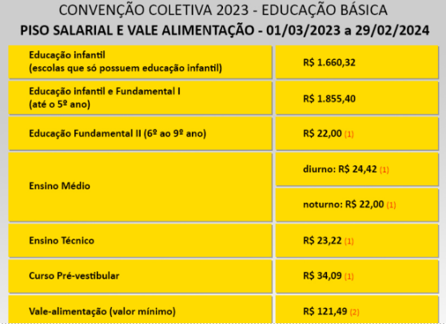

Salário dos Professores de 2023 são revelados
Em 2023, aportaria que definiu reajuste do valor pago em 2023 foi publicada no dia 17 de janeiro no Diário Oficial da União, e assinada pelo ministro da Educação, Camilo Santana. O piso salarial dos professores subiu para R$ 4.420,55 em 2023, somando-se a um reajuste de 15% em relação ao piso anterior, de R$ 3.845,63. O pagamento é válido para os profissionais que tenham a jornada de trabalho de 40h semanais. Até o momento, o valor do piso dos professores 2024 não foi divulgado.
